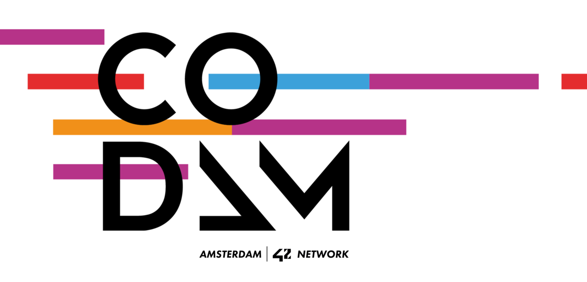

About
Me
I am a developer in training based in the Netherlands. I have a serious passion for AI and algorithms.
Well-organised person, problem solver, person with high attention to detail. Fan of outdoor activities, bouldering and gaming.
Interested in the entire cycle with working on ambitious projects with positive people.

Student @ Codam Coding College

Student @ Open Universiteit
Social
Links
These are my social links, if you want to get in touch with me instead, go to the contact section.